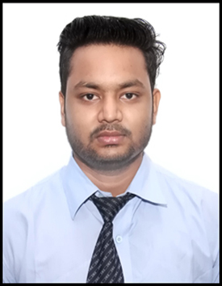

RAVI PRAKASH VERMA
Engineer
Currently working on DSA & Frontend
DSA, HTML & CSS.
DSA, HTML & CSS.
About me
To have a growth oriented and challenging career, where I can contribute my knowledge and skills to the organization and enhance my experience through continuous learning and teamwork.
Education
- Btech in Mechanical specialization form IMS Engineerging College.
- Intermediate from Amrit Public School in 2014.
- High School from Central Public School
Experience
- Worked as a Junior Production Engineer (Shift Leader) in CCM (Compact Camera Module) FATP Department from January,2020 to March,2020.
- Got training from Jiangxi Holitech Technology Co. Ltd, China.
- Training in LCM (Liquid Crystal Module) Department from September,2019 to January,2020 as a Quality Inspection (IPQC & OQC), Production and Process Management.